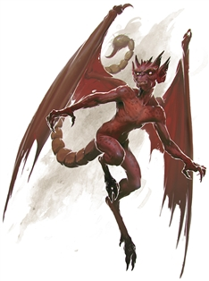

Imp
Imps are found throughout the Lower Planes, either running errands for their infernal masters, spying on rivals, or misleading and waylaying mortals. An imp will proudly serve an evil master of any kind, but it can’t be relied on to carry out tasks with any speed or efficiency.
An imp can assume animal form at will, but in its natural state it resembles a diminutive red-skinned humanoid with a barbed tail, small horns, and leathery wings. It strikes while invisible, attacking with its poison stinger.